从今天开始转载Windows Exploit教程，也是为了试一试自己的翻译能力，可能有些地方翻译的不是很准确，希望评论告诉我
原链接如下：
Windows Exploit Development – Part 1: The Basics
概述
欢迎阅读Windows漏洞利用开发系列文章的第一部分。在第一部分中，我将仅介绍了解未来帖子内容所需的基础知识，包括一些汇编语法，Windows内存布局和使用调试器。这不是对这些主题的全面讨论，所以如果你没有接触过汇编或者在你阅读过第一篇文章后如果你对某些地方不清楚，我鼓励你去看一看我提供的多样的资源链接。
我对本系列其他部分的计划是涉及各类的的漏洞利用方面，从简单的（直接的EIP覆写）到更复杂的（Unicode，egg hunters，ASLR绕过，堆喷射，设备驱动漏洞利用等），使用实际的漏洞利用来证明每一个主题。我真的看不到结尾，所以当我想到更多的话题时，我会继续写文章。
目的
我这一系列文章的目标是介绍查找和编写Windows应用程序漏洞的概念，希望没有太多技术知识的安全和IT专业人员对软件安全感兴趣，并应用他们的技能使私有和公共域软件更安全。免责声明：如果你想利用他人参与非法或不道德的活动，请去其他地方。
我还应该提到，这些帖子并不打算与其他优秀的教程竞争，比如Corelan Team, The Grey Corner, 和Fuzzy Security。相反，它们是为了补充它们，并为解释和示例提供另一种资源——如果你像我一样，你永远不会有太多的示例。我强烈建议你去看看其他的好网站。
你需要什么
如果你想跟进，以下是你需要的：
- Windows安装：我计划从Windows XP SP3开始，但随着我的进展和涉及不同的主题/漏洞利用，我也可以使用其他版本，包括Windows 7和Windows Server 2003/2008。
- 调试器：在Windows主机上，您还需要一个调试器。我将主要使用Immunity Debugger，您可以在这里下载。您还应该获得Mona插件，可以在这里找到。我还将在一些示例中使用WinDbg。可在[此处](http://msdn.microsoft.com/en-us/library/windows/hardware/ff551063(v=vs.85).aspx)找到下载说明（向下滚动页面查看早期版本的Windows）
mona插件的原帖地址已经找不到了，我就把链接换成的看雪的。安装Immunity Debugger需要Python2.7.1的环境，当主机未安装的时候会自动开始安装。
- 一个Backtrack/Kali主机（可选）:我在所有脚本中都使用Kali主机，并且计划在我使用的任何远程攻击示例中将其用作“攻击机器”。我计划对大多数脚本使用Perl和Python，因此您可以选择在Windows主机上安装任意一种语言环境。
Immunity Debugger入门
让我们先看一看调试器，因为在这些教程中我们将花费大量时间使用它。我将主要使用Immunity Debugger，因为它是免费的，并且有一些插件和自定义脚本功能，我计划随着我们的进展突出显示这些功能。
我将使用Windows Media Player作为示例程序来引入Immunity Debugger。如果要继续，请打开Windows Media Player和Immunity Debugger。在Immunity Debugger中，点击File->Attach，选择应用或者进程的名字（在我的实例中，是wmplayer）。注意：你也可以通过单击File->Open并且选择可执行文件直接启动WMP。
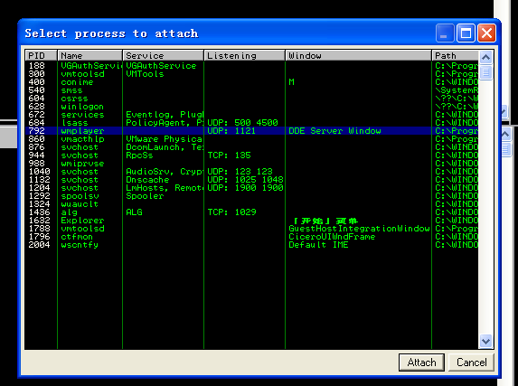
一旦您在Immunity中启动了一个可执行文件或链接到一个进程，您应该被带到CPU视图（如果没有，请点击Alt+C），它看起来如下：
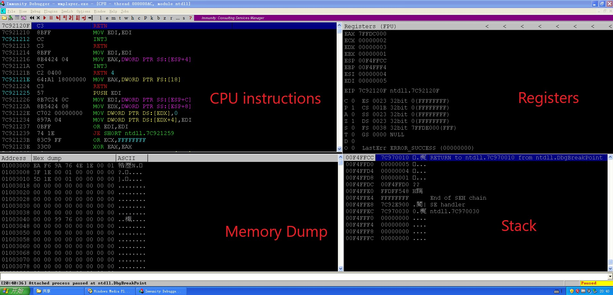
当你使用Immunity运行/链接到一个程序时，它会在暂停状态下启动（见右下角）。要运行程序，您可以按F9（或工具栏中的“开始”按钮）。要进入下一条指令（但暂停程序执行流程），请按F7。您可以使用F7一步一步地完成每个指令。如果要在任何时候重新启动程序，请按Ctrl+F2。我不会提供一个关于如何使用Immunity的完整教程，但是我会在本文和将来的文章中介绍新概念时，尝试提及任何相关的快捷方式和热键。
如您所见，CPU窗口分为四个窗格，描述以下信息：
- CPU指令——显示内存地址、操作码和汇编指令、附加注释、函数名以及与CPU指令相关的其他信息。
- 寄存器——显示与应用程序当前状态相关联的通用寄存器、指令指针和标志的内容。
- 堆栈——显示当前堆栈的内容。
- 内存转储——显示应用程序内存的内容。
让我们从寄存器开始，更深入地了解每一个。
CPU寄存器
CPU寄存器用作用于快速访问数据的小存储区域。在x86（32位）体系结构中，有8个通用寄存器：eax、ebx、ecx、edx、edi、esi、ebp和esp。技术上，它们可以用于存储任何数据，尽管它们最初是为执行特定任务而设计的，而且在许多情况下，现在仍然以这种方式使用。
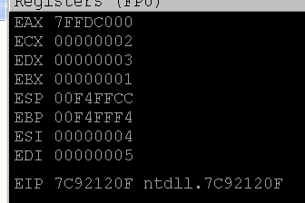
以下是每个的详细信息……
EAX——累加器寄存器
它之所以被称为累加器寄存器，是因为它是用于普通计算（如add和sub）的主寄存器。虽然其他寄存器可用于计算，但EAX通过分配更高效的单字节操作码而获得了优先状态。当涉及到为有限的可用缓冲区空间编写利用shellcode时，这种效率可能非常重要（在未来的教程中将详细介绍！）。除了在计算中使用之外，EAX还用于存储函数的返回值。
本通用寄存器可全部或部分参考如下：EAX是指32位寄存器的整体。AX指最低有效16位，可进一步分解为AH（ax的8个最高有效位）和AL（8个最低有效位）。
下面是一个基本的视觉表示：
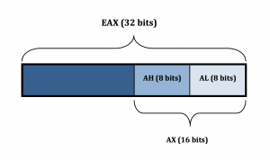
同样的全部/部分32位、16位和8位引用也适用于接下来的三个寄存器（EBX、ECX和EDX）。
EBX——基址寄存器
在32位体系结构中，EBX实际上没有特殊的用途，因此只需将其视为可用存储的全部捕获。与EAX一样，它可以被整体（EBX）或部分（BX、BH、BL）引用。
ECX——计数器寄存器
顾名思义，计数器（或计数）寄存器经常被用作循环和函数重复计数器，尽管它也可以用来存储任何数据。与EAX一样，它可以被整个（ECX）或部分（CX、CH、CL）引用。
EDX——数据寄存器
EDX有点像EAX的伙伴寄存器。它通常用于数学运算，如除法和乘法，以处理溢出，其中最重要的位存储在EDX中，而最不重要的位存储在EAX中。它也常用于存储函数变量。与EAX一样，它可以全部（EDX）或部分（DX、DH、DL）引用。
ESI——资源索引
与EDI对应，ESI通常用于存储指向读取位置的指针。例如，如果一个函数被设计为读取一个字符串，那么ESI将保存指向该字符串位置的指针。
EDI——目标索引
尽管它可以（也可以）用于一般数据存储，但EDI主要设计用于存储函数的存储指针，例如字符串操作的写入地址。
EBP——基底指针
EBP用于跟踪堆栈的底部/底部。它通常用于通过使用EBP当前值的偏移量来引用位于堆栈上的变量，但是如果参数仅由寄存器引用，则可以选择将EBP用于一般用途。
ESP——栈指针
ESP用于跟踪堆栈顶部。在所有的通用寄存器中，ESP很少用于或从未用于除预期用途以外的其它用途。
指令指针（EIP）
EIP不是一个通用寄存器，但是适合在这里介绍，EIP指向CPU要执行的下一条指令的内存地址。正如您将在接下来的教程中看到的，控制EIP的值，您可以控制应用程序的执行流（执行您选择的代码）。
段寄存器和EFLAGS寄存器
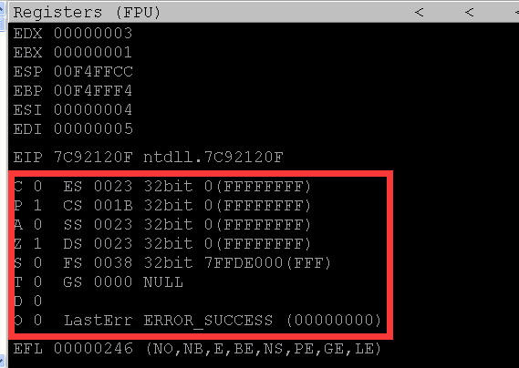
您将在“寄存器”窗格中看到另外两个寄存器：段寄存器和EFLAGS寄存器。我也不会详细介绍，但请注意，eflags寄存器由一系列标志组成，这些标志表示计算和比较产生的布尔值，可用于确定何时/是否进行条件跳转（稍后将详细介绍）。
有关CPU寄存器的更多信息，请查看以下资源：
内存转储
跳到CPU视图的内存转储窗格，您只需在这里查看内存位置的内容。例如，假设您想查看ESP的内存内容，下面的屏幕截图指向0007ff0c。右键单击ESP，选择“Follow in Dump”，内存转储窗格将显示该位置。
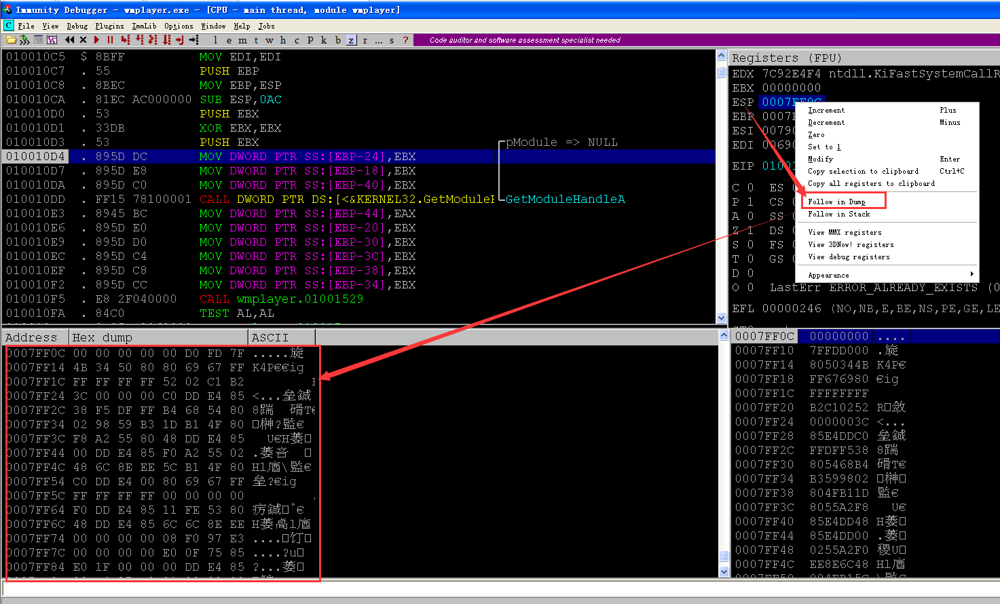
CPU指令
正如你可能知道的，现在的大多数应用程序都是用高级语言（C，C++等）编写的。在编译应用程序时，这些高级语言指令被翻译成具有相应操作码的汇编，以帮助进一步将指令翻译成机器可以理解的东西（机器代码）。在调试器中，您可以在CPU指令窗格中查看CPU正在处理的每个汇编指令（以及相应的操作码）。注意：对于Windows漏洞攻击系列，我将使用x86汇编语言Intel语法（http://en.wikipedia.org/wiki/x86_assembly_language_syntax）。
您可以单步执行程序的执行流程（F7），并查看每个CPU指令的结果。让我们看一下Windows Media Player的第一组说明。程序启动暂停。按F7几次以执行前几条指令，直到到达第二条MOV DWORD PTR SS:指令（在下面的屏幕截图中突出显示）。MOV指令将数据项从一个位置复制到另一个位置。
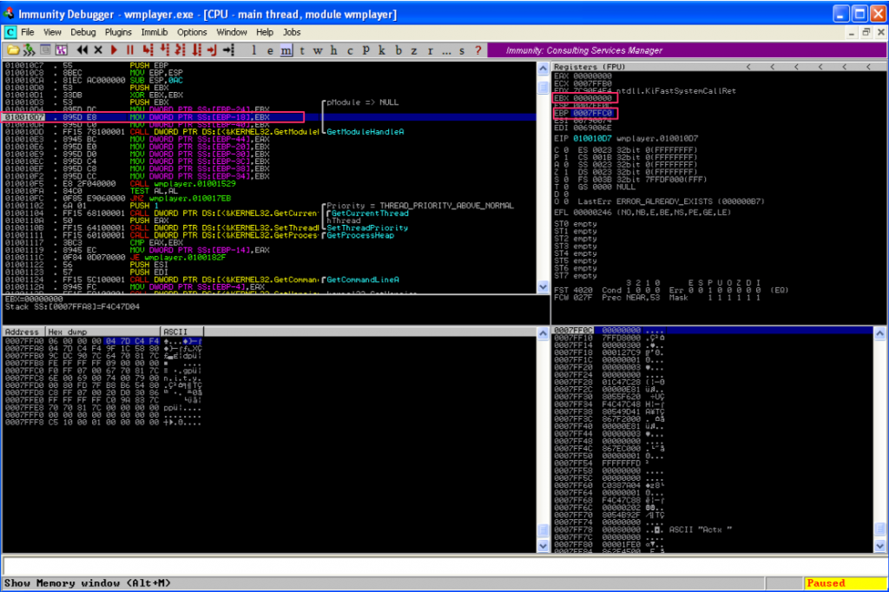
作者电脑上的演示和自己的电脑可能略有不同，下不做赘述。
此指令将把EBX的内容移动到EBP-18所指向的内存地址位置（记住使用x86 Intel语法它是mov[dst][src]）。请注意，EBP（堆栈基底指针）指向0007FFC0。使用Windows或Mac计算器（在科学/编程模式下），计算0007ffc0-0x18。结果应该是0x7FFA8，这意味着EBP的内容将被放在地址0007FFA8的位置。事实上，你不需要在Immunity之外计算。注意CPU指令窗格底部的子窗口，它已经告诉您EBX的值，以及0007FFC0–0x18的值以及该内存位置（F4C47D04）的当前内容。您可以右键单击该子窗口中的“Stack”行，然后选择“Follow address in Dump”以验证该内存位置的内容。
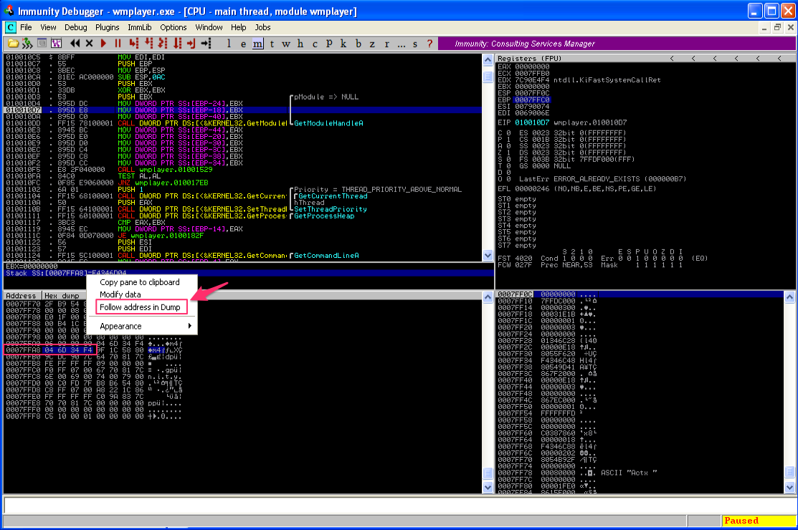
现在再次按F7执行指令。注意内存位置0007FFA8现在的值是00000000，因为EBX的内容被移到了那里。
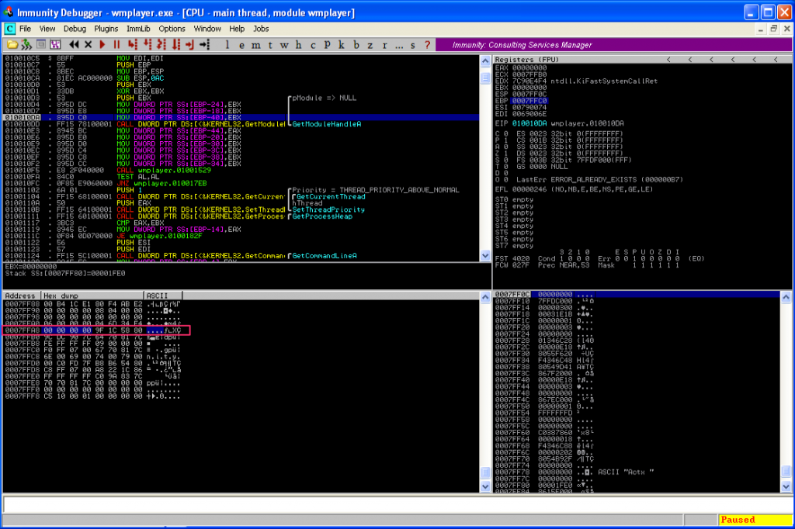
这只是一个很快的例子，说明如何在Immunity内跟踪每个CPU指令的执行。下面是一些更常见的汇编说明和语法：
- ADD/SUB op1，op2——加或减两个操作数，结果存储在第一个操作数中。这些可以是寄存器、内存位置（限制为一个）或常量。例如，ADD EAX，10表示向EAX的值添加10，并将结果存储在EAX中。
- XOR EAX，EAX——对寄存器执行“exclusive or”操作，本身将其值设置为零；清除寄存器内容的简单方法。
- INC/DEC op1——将操作数的值递增或递减1。
- CMP op1，op2——比较两个操作数（寄存器/内存地址/常量）的值，并设置适当的EFLAGS值。
- 跳转（JMP）和条件跳转（je、jz等）——顾名思义，这些指令允许您跳转到执行流/指令集中的另一个位置。JMP指令只是跳转到一个位置，而条件跳转（je、jz等）仅在满足某些条件时才执行（使用前面提到的EFLAGS寄存器值）。例如，如果两个寄存器的值相等（使用je指令和零标志（zf）=1），则可以比较两个寄存器的值并跳到某个位置。
- 当您在方括号中看到一个值，如ADD DWORD PTR [x]或MOV EAX，[EBX]时，它指的是存储在内存地址x的值。换句话说，EBX指的是EBX的内容，而[EBX]指的是存储在EBX内存地址的值。
- 相关大小关键字：字节=1字节，字=2字节，双字=4字节（BYTE = 1 byte, WORD = 2 bytes, DWORD = 4 bytes）。
我当然不是专家，但是当涉及到理解并最终开发自己的漏洞代码时，您应该对汇编语言有一个非常扎实的掌握。随着我们的进展，我将讨论更多的汇编指令，但我不打算深入介绍汇编语言，因此，如果您需要复习，有大量优秀的在线资源，包括：
这里作者给出的链接有的失效了，我就不放了，个人推荐看一看王爽老师的《汇编语言》，很快就能入门。
如果你想买一本书，你可以考虑买一本：Hacking: The Art of Exploitation: The Art of Exploitation（有兴趣的同学可以看一看……不想找中文版的地址了），它不仅涵盖了汇编的基础知识，而且还涉及到编写漏洞利用（尽管主要是在Linux环境中）。对于这一系列的文章，我将尽我所能地解释我使用的任何代码示例，因此，如果您至少对汇编语言有一些基本的了解，那么您就可以了。
Windows内存布局
在讨论堆栈之前，我想简单地讨论一下Win32进程内存布局。我应该预先声明，这将是一个非常笼统的介绍（啥叫high-level introduction……），不会涉及地址空间布局随机化（ASLR）等概念。虚拟到物理地址转换、分页、物理地址扩展等。我计划在后面的部分中介绍其中的一些主题，但现在我想让事情变得非常简单。
首先，用Immunity打开Windows Media Player后，按ALT+M查看内存映射（或者，您可以选择“View->Memory”或单击工具栏上的“M”图标）。
您应该看到如下内容（具体条目可能有所不同）：
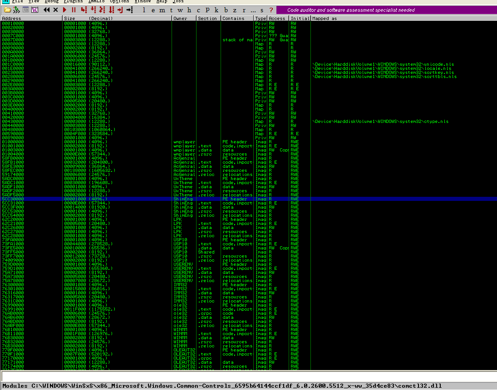
这是wmplayer.exe的内存布局，包括堆栈、堆、加载的模块（DLLS）和可执行文件本身。我将使用corelan的introductory tutorial on Stack Based Overflows中的微简化版内存映射图更详细地介绍这些，我已经将Windows Media Player的内存布局映射到了Immunity的内存映射窗口。
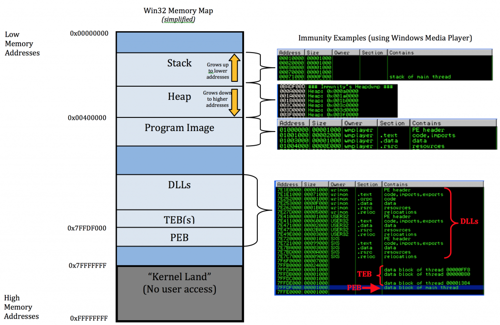
让我们从底部开始，从内存的一部分从0xFFFFFFFF到0x7FFFFFFF，这通常被称为“内核区”。
内核区
这部分内存由操作系统为设备驱动程序、系统缓存、分页/非分页池、HAL等保留。用户无法访问这部分内存。注意：有关Windows内存管理的详细说明，请参阅Windows内部手册（目前有两卷）。